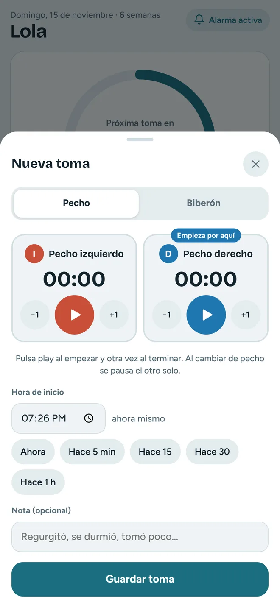
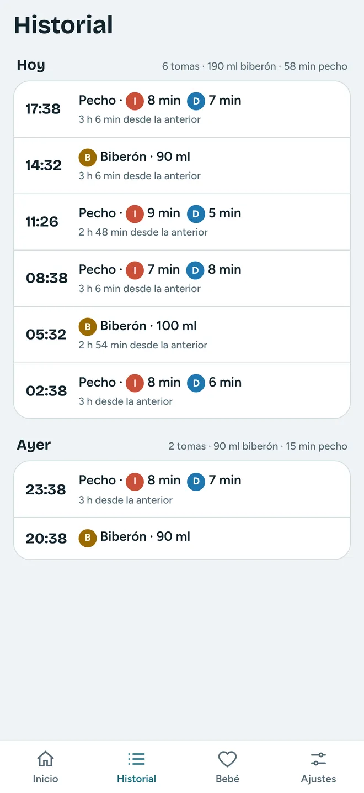
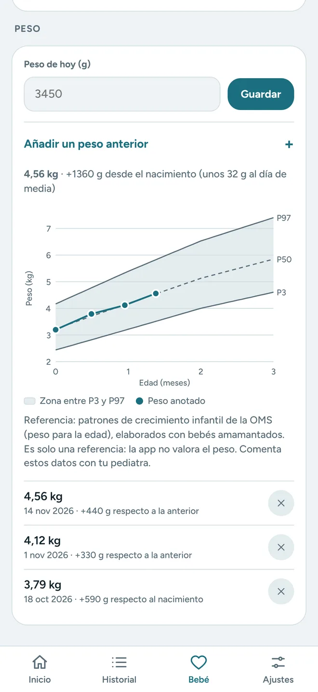
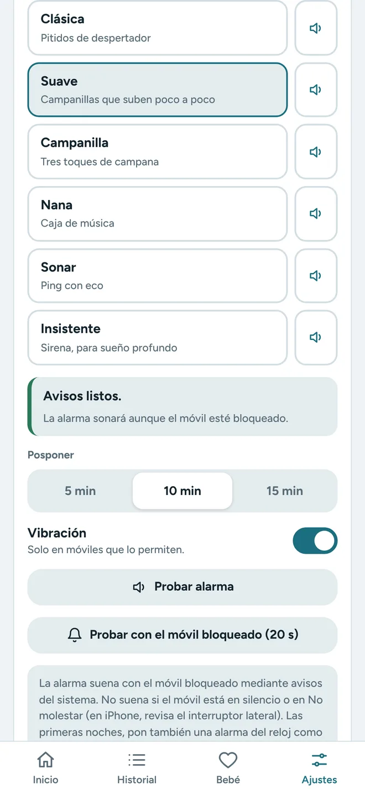

Pensada para las tomas de madrugada
Con una mano, con sueño y con poca luz. Cada pantalla hace una sola cosa y lo importante se lee de un vistazo.

Una toma, un toque
Pulsa play al empezar y otra vez al terminar. Si se te olvidó, ajusta la hora en dos segundos.
- Pecho: cronómetro para cada lado y aviso del lado por el que empezar.
- Biberón: cantidad en ml y tipo de leche, con la última cantidad ya propuesta.
- Una nota opcional para lo que quieras recordar.

El día entero, sin hacer cuentas
El historial te enseña cada toma, el tiempo entre una y otra y el total del día. Si necesitas llevarlo a la consulta, lo tienes a mano.
- Resumen de las últimas 24 horas.
- Objetivos propios y opcionales: tú pones el número, si quieres, y la app solo te lo muestra.
- Copia de seguridad para pasar los datos a otro móvil.

El peso, junto a la referencia de la OMS
Anota los pesos y míralos sobre las curvas de crecimiento de la OMS para bebés amamantados.
- Es solo una referencia visual: la app no valora el peso ni da veredictos.
- Lo que veas, coméntalo con tu pediatra.
Una alarma que de verdad suena
Funciona con los avisos del sistema, así que suena con el móvil bloqueado. Tú eliges cada cuánto, qué sonido y cuánto posponer.
Posponer 5, 10 o 15 minutos, vibración opcional y un botón para probar la alarma con el móvil bloqueado antes de fiarte de ella. No suena si el móvil está en silencio o en No molestar, y en iPhone conviene revisar el interruptor lateral. Las primeras noches, pon también una alarma del reloj como respaldo.

Lo que anotas se queda en tu móvil
Son datos de tu bebé y merecen discreción. Por eso la app no necesita cuenta y no tiene servidor al que mandar nada.
Sin cuenta
Abres la app y la usas. No pedimos correo, nombre ni contraseña.
Sin anuncios ni rastreadores
No hay publicidad, analítica ni herramientas de terceros que te sigan.
Tú tienes el control
Puedes exportar una copia o borrarlo todo desde Ajustes. Al desinstalar, desaparece.
Un diario, no un médico
Diario de tomas sirve para anotar y recordar. No diagnostica, no interpreta si tu bebé come “bien” o “mal” y no sustituye a tu pediatra ni a tu matrona.
Los objetivos son los que pones tú y la gráfica de peso es solo una referencia. Ante cualquier duda sobre la alimentación o la salud de tu bebé, consulta con un profesional sanitario. Leer el aviso médico.
Preguntas frecuentes
¿Es gratis?
Sí. La app es gratuita, no tiene compras dentro de la app ni publicidad.
¿Necesito internet?
No. Todo funciona sin conexión porque los datos viven en tu móvil.
¿Suena con el móvil bloqueado?
Sí, mediante avisos del sistema. No suena si el móvil está en silencio o en No molestar. Usa el botón de probar con el móvil bloqueado para comprobarlo en tu teléfono.
¿Dónde se guardan los datos?
Solo en tu dispositivo. No los recibimos ni los vemos. Si cambias de móvil, usa la copia de seguridad de Ajustes.
¿Es una app médica?
No. Es un diario para registrar tomas y un recordatorio. No da diagnósticos ni valoraciones. Consulta cualquier duda con tu pediatra.
¿Puedo cambiar cada cuánto suena?
Sí, el intervalo y el sonido los eliges tú, y puedes pausar o reiniciar la cuenta atrás cuando quieras.
¿Para qué móviles estará disponible?
Para iPhone y Android. Estamos terminando de prepararla para las tiendas.
¿Cómo borro todo?
En Ajustes hay una opción para borrar todos los datos. También se eliminan al desinstalar la app.
¿Algo que mejorar?
Escríbenos con ideas, dudas o fallos. La app la hacemos una familia con un bebé en casa y leemos todo.
Escribir a hmbiking@gmail.com